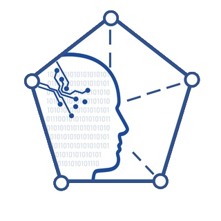

О нас

Сдача презентаций
Правила
Расписание
Сдача проекта
Номинации

Спонсоры

Карта
Положение
C:/satbayev/dev.hub/положение


C:/satbayev/dev.hub/map
С 6 по 9 декабря мы ждем вас в Алматы, в Актовом зале имени Досыма Сулеева в Горно Металлургическом корпусе Satbayev University (на фото выше вы можете увидеть сам ГМК). Это международное событие для студентов и школьников станет идеальной площадкой для тех, кто мечтает попробовать себя в разработке игр, поработать в команде и создать уникальные игровые проекты. NGJ 2024 — это атмосфера креатива, инноваций и ярких идей. Готовы окунуться в мир геймдева? Присоединяйтесь к нам!
C:/satbayev/dev.hub/about
Идея проекта: «Nomad Game Jam 2024» - Популяризация казахских игр и кочевнической культуры через создание видеоигр студентами и школьниками, развивающихся в сфере программирования, дизайна, геймдизайна, иллюстрации, литературы, моделировании, музыки и искусства. Содействие культурному обмену и взаимопониманию через интерактивные формы искусства. Создание уникальных игровых проектов, которые будут вдохновлять и увлекать геймеров по всему миру. Мероприятие проводиться с целью развития и поддержки игровой индустрии в Казахстане, развития образовательных проектов и поддержки интерактивного искусства.
-
Тебя ждет:
- Консультация профессиональных специалистов
- Разработка игры за 48 часов в творческой креативной обстановке
- Интересные знакомства
- Демонстрация твоей игры на широкую публику геймеров
А также, все то что сделает эти 4 дня незабываемыми: новые друзья, поддержка сообщества, безумные идеи, невероятный буст твоих скиллов, заливка в последнюю минуту и прохождение игр от множества других разработчиков страны!
C:/satbayev/dev.hub/presentations
Форма для сдачи презентаций проектов: Принимаются презентации в формате pptx, pdf, mp4
C:/satbayev/dev.hub/rules
Условия участия в «Nomad Game Jam 2024»
Идея проекта
«Nomad Game Jam 2024» направлен на популяризацию казахских игр и кочевнической культуры через создание видеоигр студентами и школьниками, развивающихся в сфере программирования, дизайна, геймдизайна, иллюстрации, литературы, моделирования, музыки и искусства. Цель мероприятия — содействие культурному обмену и взаимопониманию через интерактивные формы искусства, создание уникальных игровых проектов, которые будут вдохновлять и увлекать геймеров по всему миру. Мероприятие проводится с целью развития и поддержки игровой индустрии в Казахстане, развития образовательных проектов и поддержки интерактивного искусства.
Технические требования
- Проект должен явно соответствовать тематике «Nomad Game Jam 2024» - "Номад" (Кочевник). Игра должна включать элементы кочевой культуры и истории, предоставляя игрокам возможность познакомиться с жизнью кочевников.
- К участию допускаются команды от 2 до 5 человек. Каждый участник команды должен быть в возрасте от 16 лет и старше на момент старта NGJSU 24. Допуск лиц младшего возраста определяется в частном порядке организаторами.
- На разработку игры дается 48 часов. Отсчёт стартует с момента объявления старта организаторами.
- Платформа разработки: ПК (Системы Windows) и/или Веб.
- Перед стартом будут опубликованы 6 секретных подтем. Участники самостоятельно, на своё усмотрение, выбирают минимум 3 из 6 подтем, которые должны быть явно использованы в их проекте. Проекты, использующие менее 3 подтем, либо использующие их поверхностно, не проходят в финальный зачёт.
- Разрешено использование заготовок или ранее созданных прототипов, если они были созданы участниками «Nomad Game Jam 2024».
- Разрешено использование любых технологий и игровых движков, при условии, что итоговая версия проекта работает на указанных платформах.
- Разрешено использование всех публично доступных библиотек и middleware.
- Разрешено неограниченное использование ИИ-инструментов.
- Разрешено неограниченное использование генераторов контента.
- Разрешены все утилиты для создания контента и разработки (3ds Max, Photoshop, Blender и т.д.).
- Нарушение интеллектуальной собственности и авторского права в проектах участников строго запрещено и может привести к дисквалификации. Все используемые ассеты, созданные не участниками, должны быть свободны для коммерческого использования, либо у вас должно быть письменное разрешение на их использование.
- Допускается использование сторонних не публичных ассетов, если они были созданы в течение 48 часов проведения Game Jam. Однако их использование должно быть указано в документации.
- Разрабатываемые проекты должны иметь возрастной ценз 16+. Запрещено разрабатывать проекты, прямо или косвенно нарушающие законы, разжигающие рознь или принижающие достоинство людей.
- Во время регистрации команда обязана явиться в полном составе. При недостаточном составе из-за неявки или дисквалификации участники могут быть перераспределены в другие команды.
- Организаторы оставляют за собой право дисквалифицировать участников за недостойное поведение.
Отправка материалов
После окончания «Nomad Game Jam 2024» необходимо отправить скомпилированный проект под целевую платформу, видеоролик, исходный код, описание проекта, презентацию от 5 до 15 скриншотов проекта с аргументацией, а также информацию обо всех используемых в игре сторонних ассетах.
Критерии оценки
- Уровень уникальности.
- Технологическая и дизайнерская новизна.
- Привлекательность для потребителя.
- Возможность реализации.
- Юзабилити и дизайн.
- Техническое решение.
- Уникальность идеи.
- Клиентский эффект.
Процесс оценки
Оценка результата проводится каждым членом Соревновательного Жюри. Итоговое количество баллов является соревновательным результатом команды в каждой из номинаций. Игра должна включать элементы, связанные с казахской и кочевнической культурой, историей и традициями. Команды из школьников, студентов колледжей и вузов получают дополнительные модификаторы при подсчёте набранных баллов.
Определение победителей
Команды с лучшими соревновательными результатами называются победителями. При равном количестве баллов у разных команд решение о победителе принимает представитель Партнера или член Жюри.
Публикация результатов
Описание результатов победителей публикуется на сайте "Nomad Game Jam 2024".
Окончательные решения
Решения Соревновательного Жюри и Организатора являются окончательными и не подлежат пересмотру.
Политика конфиденциальности
Сбор и обработка персональных данных
Оставляя заявку на участие в мероприятии, вы подтверждаете свое согласие на обработку предоставленных вами персональных данных. Мы используем данные исключительно для целей, связанных с организацией и проведением мероприятия.
Какие данные мы собираем?
- Имя и фамилия
- Контактный номер телефона
- Адрес электронной почты
- Другие данные, которые вы предоставляете добровольно в форме заявки.
Цели обработки данных
Персональные данные используются для:
- Организации мероприятия;
- Уведомления участников о деталях мероприятия;
- Обратной связи с участниками.
Защита данных
Мы принимаем все необходимые организационные и технические меры для защиты ваших данных от несанкционированного доступа, изменения, раскрытия или уничтожения.
Передача данных третьим лицам
Ваши данные не передаются третьим лицам, за исключением случаев, предусмотренных законодательством.
Срок хранения данных
Персональные данные хранятся до завершения мероприятия, после чего они удаляются или обезличиваются, если иное не предусмотрено законодательством.
Ваши права
- Получить информацию о ваших данных, которые мы обрабатываем;
- Отозвать согласие на обработку данных;
- Потребовать удаления или исправления предоставленных данных.
Контактная информация
Для любых вопросов или запросов, связанных с обработкой персональных данных, вы можете связаться с нами:
- Электронная почта: bighub.info@gmail.com
Ваше согласие с данной политикой необходимо для участия в мероприятии.
C:/satbayev/dev.hub/schedule
6 декабря (Пятница) - Первый день фестиваля
| Время | План |
|---|---|
| 09:00-09:30 | Сбор участников «Nomad Game Jam SU 2024» |
| 10:00-10:03 | Церемония открытия. Приветствие ведущего |
| 10:04-10:10 | Приветствие Ректора НАО «КазНИТУ им. К.Сатпаева» - Бегентаев М.М. |
| 10:12-10:20 | Приветствие директора ИАиИТ – Кальпеева Ж.Б. |
| 10:20-10:30 | Приветственные слова от спонсоров фестиваля |
| 10:30-10:50 | Шоу программа |
| 10:50-11:10 | Презентация «Nomad Game Jam SU 2024». Представление программы открытия |
| 11:10-11:20 | Знакомство с составом жюри. Приветственное слово жюри |
| 11:20-11:30 | Обратный отчет. Открытие фестиваля |
| 11:30-11:50 | Распределение команд по аудиториям |
| С 12:00 | Старт фестиваля «Nomad Game Jam SU 2024». Работа команд |
7 декабря (Суббота) - Второй день фестиваля
| Время | План |
|---|---|
| Весь день | Работа команд фестиваля «Nomad Game Jam SU 2024» |
8 декабря (Воскресенье) - Третий день фестиваля
| Время | План |
|---|---|
| До 12:00 | Работа команд |
| 12:00 | Прием проектов «Nomad Game Jam SU 2024» до 11:59 |
| 12:00 – 18:00 | Подготовка команд к защите проектов. Свободное время |
9 декабря (Понедельник) - Закрытие фестиваля
| Время | План |
|---|---|
| 09:00-09:30 | Сбор участников «Nomad Game Jam SU 2024» |
| 10:00-13:00 | Презентация работ участниками фестиваля |
| 13:00-14:00 | Работа жюри |
| 15:00-17:00 | Церемония награждения победителей «Nomad Game Jam SU 2024» |
C:/satbayev/dev.hub/Upload
Регистрация команды
Пожалуйста, заполните все необходимые поля для регистрации.
Внимание! Участие возможно только от 2-х человек!
Спасибо за регистрацию!
Подпишитесь на наш телеграм-канал, чтобы быть в курсе всех событий:
C:/satbayev/dev.hub/awards
Составом жюри будут определены три лучших проекта фестиваля.
- 1 место — 1 000 000 тенге
- 2 место — 700 000 тенге
- 3 место — 500 000 тенге
За каждую номинацию по 100 000 тенге:
- Лучшая образовательная игра (Education)
- Лучший школьный проект (Best Junior Team)
- Лучший сценарий (Best Script)
- Инновация (Innovation)
- Лучший дизайн (Best Design)
Лучшая команда получит стажировку в независимую мультиплатформенную интерактивную развлекательную студию “ RedPad Games”. Победители получат ценные призы и подарки от спонсоров. При этом один проект не может стать победителем сразу во множестве номинаций!
C:/satbayev/dev.hub/sponsorship


C:/satbayev/games
Результаты Nomad Game Jam 2024
+ Первое место
- Сертификат в 1 000 000 тенге – Команда «The Best Juniors» - Alikhan Bokeikhan University г.Семей
+ Второе место
- Сертификат в 700 000 тенге- Команда «IT College» - Инновационный технический колледж г.Алматы
+ Третье место
- Сертификат в 500 000 тенге- Команда «Murakami Cult» - Funcode и De Montfort University Kazakhstan г.Алматы
Номинации
+ «Best Junior Team»
- лучший школьный проект Грант Satbayev University и сертификат в 100 000 тенге - команда «ERAIS48» - Ахмет Байтұрсынұлы атындағы №48 мектеп-лицей г.Астана
+ «Innovation»
- Инновационная геймплейная механика -за уникальность и инновационность идеи, сертификат в 100 000 тенге – команда «Кашевары» - Nazarbayev University г.Астана
+ «Best Design»
- Лучший визуальный стиль и эффект – команда «AITU Boys Band» - Astana IT University г. Астана
+ «Best Script»
- за лучшую адаптацию и сюжет игры, сертификат в 100 000 тенге - команда «Little Stars» - Казахская национальная академия искусств имени Т.Жургенова г.Алматы
+ «Education»
- Лучший образовательный проект, сертификат в 100 000 тенге -команда «Rikar GS» - Инновационный Технический колледж г.Алматы
Казахские национальные игры
+ Тымақ ұру
- Сбивание тымака — это казахская национальная игра, принять участие в которой может каждый, умеющий держаться в седле и имеющий лошадь. Шест, высотой не превышающей всадника, втыкают в землю и надевают на его верхушку головной убор — тымак. Участнику игры показывают место, на котором установлен тымак, затем плотно завязывают глаза и дают в руки камчу. После этого наездника крутят на одном месте и отпускают со словами: «Ну-ка теперь иди, сбей тымак». В случае, если игрок не сбил тымак с трёх попыток, он может, по разрешению ведущего, исполнить песню или импровизацию, что даёт ему право вновь принять участие в состязании. Количество участников игры не ограничивается, испытать удачу может каждый, у кого есть верховая лошадь.
+ Қыз қуу
- Кыз куумай (догони девушку) — национальная конная игра в Казахстане и Кыргызстане. В ней участвуют юноши и девушки, которые состязаются парами на лошадях полукровных пород. В первой половине игры девушку преследует юноша и если догоняет, то её целует; во второй половине игры они меняются местами. Девушка стремится догнать своего партнера и в случае удачи бьет его камчой. Дистанция скачки 400—500 м. В конце дистанции устанавливается флаг, обозначающий поворотно-контрольный пункт. Девушка (а юноша в обратную сторону) принимает старт на две лошади впереди.
+ Көкпар
- В казахской национальной игре кокпар принимали участие джигиты аулов, соседствующих по пастбищу. Данное состязание было проверкой на силу, ловкость, меткость, умение держаться в седле. В день соревнований все участники и зрители собирались на поле. На расстоянии 10-20 метров соревнующихся бросалась туша барана. Так и начиналась борьба за кокпар, которая могла длиться до самого вечера.
+ Аударыспақ
- Аударыспак — известный вид казахской народной борьбы — один из видов борьбы всадников на лошадях (жекпе — жек ойыны). По правилам этой разновидности конной борьбы разрешается «увлекать» за собой соперника только вперед и к себе, а также выезжать вперёд соперника, тем самым мешая ему продвигаться вперед. Кроме того, запрещается применять друг против друга нагайку — непременный атрибут любого всадника. Большое значение в аударыспак имеет подбор лошади. Согласно устоявшимся требованиям, наиболее предпочтительными являются невысокие, подвижные и сильные лошади. В прошлом даже были специалисты, которые занимались выращиванием и подготовкой таких лошадей. Соревнования в казахских единоборствах, играх и состязаниях обычно устраивались во время традиционных праздников, а также семейных торжеств. Нередко схватки организовывались и в часы досуга, для чего было достаточно всего лишь бросить вызов: «А ну, давай! Кто из нас сильнее?». Ещё в недалеком прошлом обучение аударыспаку начиналось с детства. Казахского мальчика очень рано приучали к седлу. Первые свои схватки он проводил, сидя верхом на жеребятах, баранах или молодых бычках. Большую практическую ценность имели также разнообразные игры, например, жаяу аударыспак, где роль лошади исполнял напарник. У повзрослевших джигитов основным методом тренировки становились многочисленные соревнования и поединки ради разрешения спора.
+ Бәйге
- Игроки парами (конь и наездник) встают на линию старта так, чтобы не мешать друг другу. Первый игрок — конь — вытягивает руки назад-вниз, второй — наездник — берёт его за руки, и в таком положении пары бегут до линии финиша. Наездник, первым прискакавший к финишу, должен подпрыгнуть и достать узорный платочек, подвешенный на стойке.
+ Түйме алу
- На противоположных сторонах площадки намечают линии старта и финиша. По площадке раскладывается большое количество монет (камешков). Игроки выстраиваются вдоль линии старта. По сигналу джигиты начинают скачки — передвигаются по направлению к линии финиша, имитируя скачку на конях. Во время скачек джигиты, не останавливаясь, наклоняются и поднимают монеты. Побеждает тот, кто смог во время скачек собрать больше монет.
+ Аламан Бәйге
- Казахская национальная игра «Аламан байга» — это испытание не только наездников, умения держаться в седле, а главным образом — это испытание для лошадей. Аламан байга — это конное состязание, скачки на длинные и сверхдлинные дистанции. Исторические корни этой игры основываются на необходимости казахов готовить лошадей к длинным переходам во время перекочевки на новые места, а также отбора самых выносливых и сильных скакунов для улучшения породы. Так постепенно Аламан байга стала неотъемлемой частью больших праздников. Иногда во время таких вот соревнований некоторые лошади не выдерживали нагрузки и погибали не дойдя до финиша или падали от усталости, ломая ноги. Известно, что наездники перед скачками, для того, чтобы защитить своих скакунов от сглаза заплетали им хвост и гриву в косы и вплетали в неё перья филина или амулеты от сглаза, а также старались никому не показывать скакуна, держа его под попоной.
+ Ақсүйек
- Участники игры становятся в шеренгу. Ведущий берёт белую кость (можно использовать резиновый мяч, деревянный ключ, резные палочки и т. д.) и напевает: Белая кость — знак счастья, ключ, Лети до луны, До белых снежных вершин! Находчив и счастлив тот, Кто тебя в миг найдёт! После чего ведущий бросает кость за шеренгу играющих. В этот момент никто не должен оглядываться назад, чтобы не видеть, в какую сторону летит кость. Когда кость упадет, ведущий объявляет: Ищите кость — Найдёте счастье скорей! А найдёт его тот, Кто быстрей и ловчей! Цель действий — быстро найти кость и незаметно для остальных принести её ведущему. Если дети заметят её, они преследуют игрока и, слегка ударив по плечу, отбирают кость, затем тоже бегут к ведущему. Для того чтобы быть незаметным и без препятствий донести кость до ведущего, можно проявить хитрость, находчивость. Иной игрок под предлогом того, что он не может найти кость, идёт к ведущему шагом, отвлекает внимание соперников различными способами (например, громко говорит, указывая на другого, и утверждает, что кость якобы у него и т. д.). Если игрок нашёл кость, то есть оказался счастливцем, то вся группа или один из группы исполняют его желание: поют, читают стихи, подражают голосам животных.
Start
About
Сдача презентаций
Sponsors
Rules
Schedule
Сдача проекта
Awards
N.G.
Карта
Положение
Dev.HUB
-
О нас
-
Сдача презентаций
-
Спонсоры
-
Правила
-
Расписание
-
Сдача проекта
-
Номинации
-
Nomad Games
-
Карта
-
Положение
-
Спонсор Фестиваля

-
Партнеры:
-
Организаторы:
- 
ИАиИТ

TheHub

Windows 95 info

Регистрация прошла успешно
Социальные сети